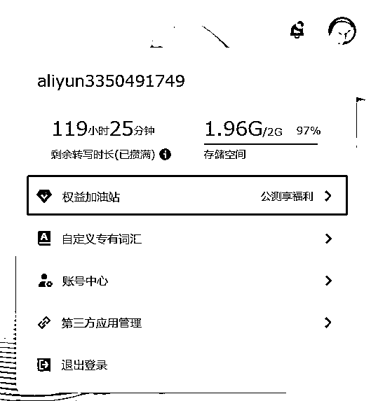

来源：https://superhuang.feishu.cn/docx/AoxId5jKWouzKIxp5VgcgOpcnQD
使用通义听悟，可以快速的帮助我们把视频、音频的文字提取出来，并快速完成总结，这样可以大幅节省我们的时间效率。
这篇文章，我会介绍如何使用好通义听悟，来帮助自己更好的完成工作和学习：
过去我是飞书妙记的重度用户，现在我几乎完全放弃它。
只是因为新产品的出现：通义听悟！
它将语音转文字的操作一键完成，转换准确率大幅提升，支持多种导出格式，更重要的是还具备强大的AI分析能力，实现智能提炼、总结等功能。
想象一下，复杂的工作可以被简化，重复的劳动可以被自动化，难以获取的价值可以被发掘。
下面让我带你一起，重新感受AI的力量:)
Take Away：
真的，给大家看我的界面：
很多音频文件我都是用通义听悟来处理，有哪些场景会用到呢？给大家说说几个典型的例子啊：
我们以B站视频举例，按步骤和大家说一下如何实现：
完成AI解析后，总的界面是这样的：
左上部分是原视频
左下部分是AI总结
右侧是笔记区域，可以把左侧的内容摘要到右侧，也可以自己编辑，对于工作学习做总结非常方便。
我们现在时间有限，很多优秀的播客内容又想听，那怎么办呢？可以使用下面的方法来把音频文件导出来，丢给通义听悟，转成文字版本，还带有总结呢，方便多了：
我做访谈节目，有些会有个前采环节，相当于预先的采访，这里会产生2-3小时的对话内容，我习惯说把过程录音下来，然后回来丢给通义听悟，基于转文字之后，来做提炼总结。
甚至更进一步，我会把访谈内容导出成word，丢给Claude，请它来总结嘉宾的成长经历，以及给出对应的访谈提纲：
这样能非常快速地帮助我们提炼内容，并且我们可以根据最后的内容做调整和修改。
有关我是如何用Claude来提高效率的，大家可以具体查看： 。
因为每一期播客音频的时长会在2个小时以上，需要剪辑成40-50分钟的内容，就需要对着文字来做删减，我会先把视频里面的音频提取出来，丢给通义听悟，然后对着里面的文字做标注，方便回头用Audition来做删减：
文字上标注蓝色的，是我会保留的内容，其他的会删掉。
这样在Audition操作的时候，就可以对照着看，快速的找到时间点做处理了。
这一步是粗剪，粗剪完了再精剪，可以有效的节约大量的时间。
我做播客，习惯把一些精彩的对话片段放在音频一开头，吸引到听众。
怎么做呢？
通义听悟有一个功能叫实验室，里面会提取出一些值得关注的内容，根据我的几次测试，里面推荐的文字，不少确实是整段对话中的精彩片段！这就很省事了！
除此之外呢，通义听悟还有章节速览的功能，对于辅助我做好Shownotes颇有帮助，可以借助来快速找到对应的内容段落：
我们可以发现，通义听悟的核心功能是，基于音频提炼的文字，做AI总结，目前包括摘要、章节自动划分、高亮提炼、问题回顾、待办事项提炼。
所以，我们可以在更多场景使用它：
这一些场景，是我请Claude罗列的，仅供参考。
在是用通义听悟之前，我一直在用飞书妙记，飞书妙记的核心功能，也是视频/语音转文字，但我现在只会在需要分享给嘉宾的时候，才会回到飞书妙记上，因为目前通义听悟还不大能分享。
那在哪些点上，通义听悟做的比飞书妙记要好呢？
主要有三层：
我们分别来讲讲
飞书妙记主体还是以语音转录为主，然后我们看右上方也提炼了一些关键词，点击之后相当于搜索关键词。
除此之外，几乎就没有了AI总结的能力。
那我们反过来看通义听悟，至少有这么几个AI能力：
分别从不同维度使用AI做了内容摘要
打开后，它会对原文内容中的问题，做高亮显示。
我看了下，基本覆盖得很全面。
提取了算法觉得一些重点的内容片段，鼠标移上去会出现浮窗，可以点回顾，正文会跳转到内容所在的位置，可以点摘取，会把语句复制到右侧的编辑区。
会自动的提取出正文内容里可能需要代办的事项。
值得关注、待办事项两个区域，都可以自己手动新增记录。
如果希望有很多专有词汇，希望语音转的比较准确，可以自己增加。
这个我倒是没用过，普通的转译已经挺准的了。
通义听悟支持微信小程序，并且可以从微信里直接读取文件
而飞书妙记必须使用PC网页端才能上传文件，使得你的文件必须要首先同步到电脑上，就很麻烦了。
因此右侧给了一半的编辑区域，可以把正文部分的内容一键摘取过来，也可以把标记的内容一键摘取。
编辑器也做的挺丰富的，基本的功能也都支持。
飞书妙记只支持飞书文档、TXT之类的，麻烦得很。
通义听悟则直接支持主流的PDF、Word
其他的还有不少细节，大家可以自己去挖掘一下。
飞书妙记，如果你想使用，得注册飞书账号，并且必须是企业账号，这带来了使用门槛。
同时，飞书妙记是飞书All in One工具体系的其中一个模块，也让它的易用性受到了飞书整体系统的复杂度。
整体容量在免费版本里面，上限就是10个G：
之前我使用，都经常需要删除内容来保留空间。
那通义听悟，则更加小巧灵活。因为它就是一个独立的产品，可以更加专注的做用户场景的优化。
之前是网页版，现在针对微信增加了小程序版，体验更加丝滑了。小程序使用微信手机接口授权就可以登录，使用门槛大幅降低。
容量空间只有2个G，但是呢，它打通了阿里云盘，在上传音视频界面里，可以选择直接从阿里云盘里面导入，这个时候是不占用空间的。
因为Super使用阿里云盘比较早，我的阿里云盘空间是1.79TB，足够足够了。
对我来讲，通义听悟+阿里云盘=免费的无限空间
小结来看，飞书妙记只是针对飞书本身的应用场景，比如使用飞书在线会议时，可以一键转录成飞书妙记，并自动转写成文字，这是非常方便的。
但也恰巧是All in One限制了它，它并不是作为一个独立产品快速迭代更新的。使用飞书妙记有一两年的时间了吧，我几乎没有看到过它在什么地方有过更新。。。
但通义听悟有后发优势，独立团队开发，也瞄准了更加广阔的工作学习AI助手的场景，快速迭代，推出的功能也非常符合用户需求，加上AI的赋能，很快就有了不少黑科技的突破。
就我自己来讲，已经推荐了身边很多朋友使用：
根据刘飞【三五环】《No.121 对谈志杰：从通义听悟看，当 AI 不再是工具，而是个人助手》
志杰是阿里云通义听悟产品&研发负责人，根据播客内的交流，我们可以得知，通义听悟的诞生至少有这么几个大阶段：
我们看到这种演化过程，它就会更加像是，先有技术积累，逐步服务更多用户之后，进一步的扩展成C端产品，去搜集用户反馈，反过来看在具体的场景里要去突破什么技术要点：
从目前可见的产品迭代来说，确实是如此，比如下面提到的PPT提取就很典型。
当然，我觉得这一章节里面，通义听悟的诉求绝不仅仅是持续的做好技术和产品的相互促进，其实他们的产品定位也非常的清晰“你的工作学习AI助手”，对于这个市场的渴望绝对是很强的。
当前能找到新市场增量的产品不多，有潜在的机会，放过太可惜了，所以我们也看到通义听悟在快速迭代，包括多个渠道的产品覆盖等等。从动作回推，市场化的欲望骗不了人。
另一方面，我们看完通义听悟的诞生和演化过程，也能理解，在战略上的思考，也直接决定了产品的大小：
飞书妙记是为了飞书服务的，通义听悟是从为客户服务，到为用户服务的独立产品，背靠阿里云、钉钉资源。结果似乎必然。
Super理解，通义听悟的技术层面，由下面的架构构成：
技术层面不多说，我们来看看toC侧，它的整体产品框架设计：
它的产品构成是：
语音转写是地基
AI分析是高楼
怎么理解呢？
我们看到通义听悟，名称里的听悟，就是听了悟了，是先听再悟！
把听到的语音，转化成文字，然后就可以使用AI的能力对文字进行语义理解，再做各种黑科技操作。
因为日常工作和生活中，人类接受信息的方式，除了看就是听：
根据美国哈佛商学院有关研究人员的分析资料表明，人的大脑每天通过五种感官接受外部信息的比例分别为：视觉83%，听觉11%，嗅觉3.5%，触觉1.5%，味觉1%.
视觉信息包含大量细节，存储和处理成本很大。
声音信息特别是人类的对话信息，则信息量小很多，AI好做处理，把声音信息处理好，能够解决大量的工作生活学习的场景，比如听课、听播客、对话等等。
所以在处理信息时，优先选择容易做的声音信息，是很正确的逻辑。
我们可以看到，通义听悟也可以处理视频，不过更多的是基于视频里的音频转录成文字后，基于时间点对视频上的进度做对应关联。
这是通义听悟的基本盘。也就是语音转写是地基的含义。
这个也是飞书妙记的基本盘，甚至说飞书妙记的绝大部分功能都体现在语音转写上面。
超越飞书妙记的通义听悟，发力就发力在了AI分析上。
我们前面提到的通义听悟之所以能够取代飞书妙记，就是在AI总结部分有很多发力。
AI分析是高楼。这座高楼使得通义听悟在使用体验上，远超飞书妙记。
除了上面说的这两点，通义听悟还有一个功能最近更新的很有意思：

上传视频文件后，通义听悟将自动识别和总结视频中的PPT，你可以在视频下方阅读图文总结，点击图片全屏查看，还支持导出PPT文件哦！
我自己倒是用不上，但是看这个功能，对于上网课，学视频课程的，还是很有意义的。结合了视频中的图片识别、提取、关联、摘要总结、分段等。
也是彻底贯彻了通义听悟的slogan“你的工作学习AI助手”
我们首先要了解，通义听悟背靠阿里云，意味着有强大的AI技术积累和算力支持！这是其商业化的重要支撑！
2022年，阿里云在中国云市场占有率为36%，为市场最大者。
基于按使用量付费的模式，结合阿里云市场，可以快速打入到大客户。
另外，阿里的云钉一体，通义听悟可以与钉钉深度打通，成为协同办公场景下的智能产品，提高产品的附加值。
截至2022年9月30日，钉钉用户数破6亿人，企业组织数超过2300万家，付费DAU（日活用户数）突破1500万人。
嵌入到钉钉的会议里面还是有比较大的价值的，就看是用什么方式嵌入，以及企业的需求量多大了。
我自己是比较乐观的，特别是如果能够和云存储捆绑的话，就比较有增值服务的意义。
我们看腾讯会议就有类似的服务，按月收25元，包含了会议语音转文字等功能：
以上是B端的市场前景。
在C端，通义听悟也非常有机会，目前是免费内测阶段，从公司重要Ai产品阶段出发，通义听悟完全可以继续用免费的C端逻辑，来继续快速打开市场，并且获得用户反馈，这样可以快速迭代产品，不断地占有更大的市场。
免费的逻辑，可以这么设计：
利用稀缺资源卡脖子，关注用户的动作行为来评估产品对用户的重要程度，再持续的调整商业逻辑。
同时，从功能层面来说，目前在产品体验上是远超飞书，但是功能体验层面，或许不构成护城河，核心还是单纯的产品是否能够很强的解决用户的刚需，按照当前的情况，竞品包括飞书和腾讯会议，其转写功能是附着在主体（飞书、腾讯会议）本身的，脱离了主体，目前只剩下通义听悟可以单独去解决用户需求。
还是有比较大的先发市场机会的。
通义听悟目前在产品设计层面，主体框架已经比较稳定了，底层的大模型技术迭代，我们就不说了，下面从几个方面简单讲讲后续可以做的方向：

我们看播客、视频场景，是需要在通义听悟里面上传文件的，如果可以自动解析链接里的音视频内容，就又大幅简化了用户的操作流程。
比如选择文案后弹出的窗口，我还需要移动鼠标去选择功能操作，这里可以增加一个快捷键，免去了移动鼠标的动作
今天在即刻上看到吕立青放出来的腾讯会议截图，在会议摘要上已经做到不输通义听悟的程度了。技术上，不觉得通义听悟有很强的护城河：
Super个人认为通义听悟比起飞书妙记、腾讯会议更厉害的一点，反而它是独立产品：
它是API，它是网页，它是小程序，它是App，它是水，可以流动在一切需要它的地方。也正是如此，它的技术架构反而能够无限聚焦在工作学习领域扩展：
不断在用户最有需求的地方延展自己的能力。
今天我们文章就在这里正式进入了尾声，来一段正式的总结吧：
数字化时代，语音转文字成为提高工作效率的利器。通义听悟作为新晋玩家，凭借独立产品的灵活迭代优势，在AI能力上不断突破，领先于同类产品。
然而技术迭代速度无止境，用户体验至上。通义听悟仍需在易用性、商业模式等方面不断优化，与用户场景和需求零距离贴合，才能在激烈竞争中脱颖而出。
期待通义听悟能继续发力AI，以“你的工作学习AI助手”为使命，助力用户提升工作学习效率，创造更大价值。也欢迎更多优秀产品加入这场让人类生活变得更美好的竞赛。
AI改变世界！
刘飞【三五环】《No.121 对谈志杰：从通义听悟看，当 AI 不再是工具，而是个人助手》
包括产品演化，产品架构部分
对了，通义听悟的使用时长，除了每天签到可以获得2小时之外，邀请新朋友也可以获得2小时转写时长，
可以点击下面链接直接开始使用：
【通义听悟】我发现了一个宝藏产品，推荐给你～ https://tingwu.aliyun.com/u/vro84nrmpkkqkb3j 工作学习AI助手，依托大模型，为每一个人提供全新的音视频体验。点击链接立即注册，公测期免费体验。
另外，可以试试输入【三五环】，获得20-100小时的转写时长。
口令入口：

五星推荐
五星推荐